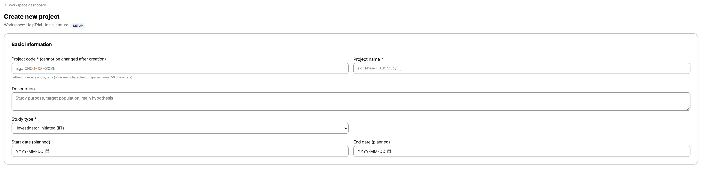
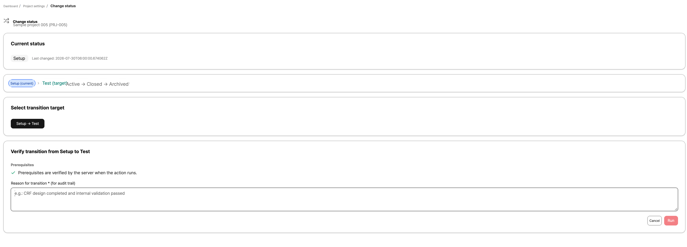
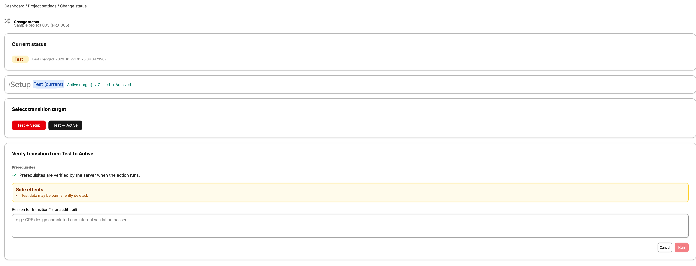
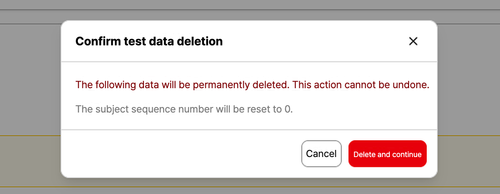
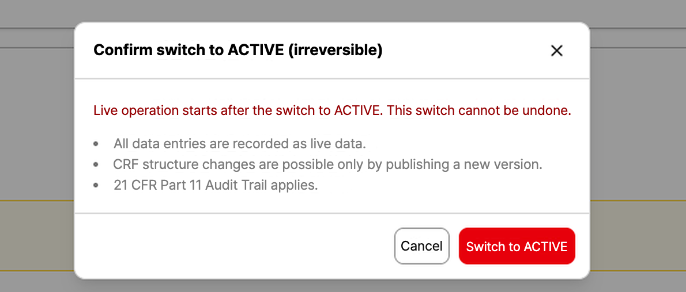
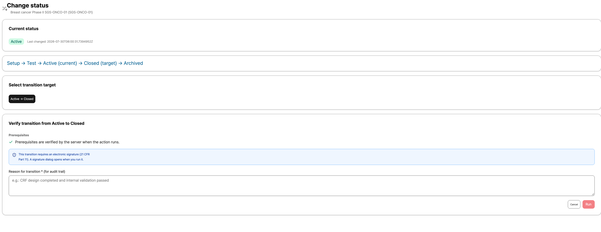
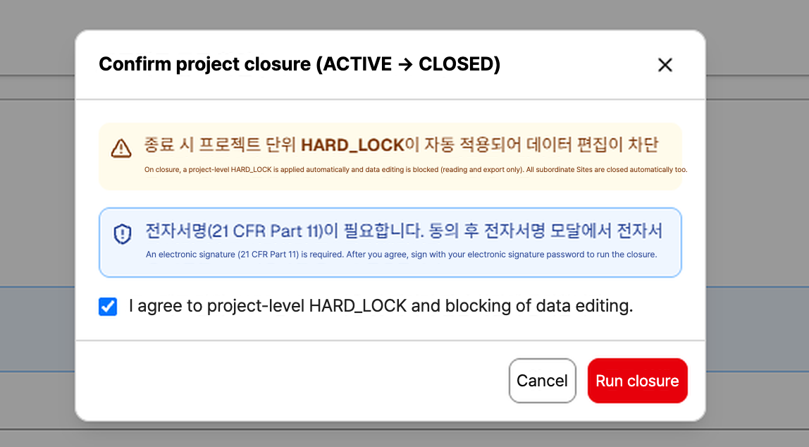
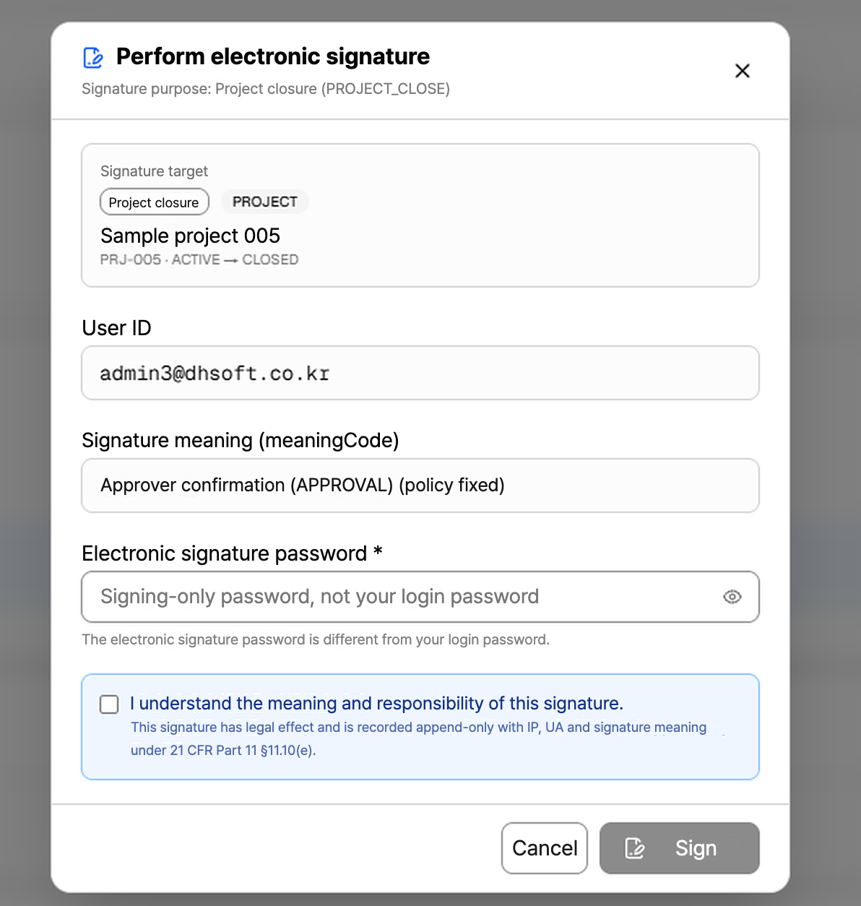

Project
SCR-PRJ-002·003·004 · Create · Settings · Change status
Create project
- 1.1Basic information
- 1.2Retention policy · Initial roles · Create
1.1Basic information
Overview
This screen creates a new project in the workspace. A project is always created in Setup status, and you move it to live operation step by step after setup is complete. You can create a project by filling in only the three fields marked with an asterisk. You can complete the other fields later on the settings screen.
Screen guide

Project code * (cannot be changed after creation) — A unique code that identifies the project. As the label says, you cannot change it after the project is created.
Project name * — The name shown on the screen and in lists. If a project with the same name already exists in the workspace, a confirmation dialog appears, and the project is created as entered if you confirm.
Description — Enter the study purpose, target population and main hypothesis. Optional.
Study type * — Select one: Investigator-initiated (IIT), Sponsor-initiated (IND), Institution-initiated (SIT) or Other. The default is Investigator-initiated (IIT).
Start date (planned) — The planned study start date. Optional.
End date (planned) — If you enter a date earlier than the start date, “End date must be after the start date” appears below the field, and creation is blocked.
← Workspace dashboard — Returns to the screen you came from. If you have entered anything, you are first asked whether to discard it.
Initial status: SETUP — Shows in advance that the created project will be in Setup status. There is no option for selecting a status.
Below the code field, the note “Only letters, numbers, - and _ allowed (no Hangul or spaces · up to 50 characters)” appears. Hangul and spaces are removed as soon as you type them, and letters are converted to uppercase.
Precautions
Must check Data corruption · Form cannot be completed
- • The project code cannot be changed for the life of the project. Because the protocol number is commonly used as the project code, check the approved protocol number before you enter it.
1.2Retention policy · Initial roles · Create
Overview
Below Basic information, the guidance on retention policy and initial roles continues. Initial roles are not a selectable option but a notice. For standard roles, the system creates them automatically when the project is created.
Screen guide

Standard (approval date + 3 years) — The retention policy selected by default.
Other (end date + 3 years) — Calculates the retention period from the study end date.
Cancel — Stops creation. If you have entered anything, the “Discard changes” dialog appears first.
Create project — Stays disabled until all required fields (Project code · Project name · Study type) are filled in. When creation is complete, you go straight to that project's settings screen 2.1.
Initial roles are not an input field. The screen states: “Standard PI, CRC, CRA, DM and Auditor roles are created automatically on the server when a project is created. No separate selection is needed.”
The bottom action bar stays fixed at the bottom of the screen even when you scroll down.
Precautions
Must check Data corruption · Form cannot be completed
- • The retention policy you select here is not saved. The current create request does not include a retention policy, and the settings screen has no such item. Enter the retention expiry date directly as a date in the Retention expiry date field on the settings screen 2.2.
Project settings
- 2.1Screen layout
- 2.2Edit metadata
2.1Screen layout
Overview
This screen brings together a project's metadata, summary figures, status and entry points to sub-screens in one place. You land here right after creating a project, and settings-type work continues to start from here during operation.
Screen guide

Edit metadata — Edit the name, description, period and so on 2.2. If you do not have edit permission, this button is not shown, and a Read-only badge appears next to the path.
Change status — Opens the status transition screen 3.1.
Quick access — Go directly to Sites, Investigator assignment, Role management, Change history or SAE notification. The same screens are also in the left menu.
You can return to this screen at any time from Settings > Project settings in the left menu.
The path is Dashboard / Project settings. On sub-screens such as Sites and Signature policy, select this location to return to this screen.
Basic information is in view mode. It shows the protocol number, name, description, type, stage, start date, end date, IRB approval date and retention expiry date. If a value is empty, — is shown.
Summary — the number of Sites, Subjects and active Queries, and the Lock status. When the project is closed, the Lock status changes to HARD; when it is archived, it changes to ARCHIVED.
Status workflow — Of the five stages (Setup → Test → Active → Closed → Archived), the current status is highlighted in blue.
Precautions
Easily misunderstood behavior
- • In Closed or Archived status, the whole screen is read-only, even if you have edit permission. The Edit metadata button itself is not shown, so do not assume a permission error just because the button is missing.
2.2Edit metadata
Overview
Instead of moving to another screen, the Basic information card on the settings screen switches to input mode. In an active project, some fields are locked. A locked field has a gray background, and its label says so.
Screen guide

Name * — Edit the displayed name.
Description — Edit the study overview.
Type — Change the study type. You can change it even during operation.
Start date — The actual study start date.
End date — The actual study end date.
IRB approval date — The date of approval by the institutional review board. It is not on the creation screen; you enter it here only.
Retention expiry date — The deadline for retaining the data. It is separate from the retention policy on the creation screen, and it is recorded only when you enter a date here directly (see Precautions in 1.2).
Save — Applies your changes. Select Cancel next to it to discard the changes and return to view mode.
The path stays the same while you edit, because editing happens on the same screen.
Once the project is active, a notice at the top of the card states that the protocol number can no longer be changed.
Protocol number (locked) — “(locked)” is added to the label, the background is gray, and the field cannot be edited. It is not locked during Setup or Test.
Stage (cannot be changed now) — Shown as not selectable. The study stage cannot be set on this screen at the moment.
Precautions
Must check Data corruption · Form cannot be completed
- • If another user edits the same project while you are saving, your save is rejected and the latest content is loaded again. The values you entered are not kept, so read the message and then make your changes again from the beginning.
Change status
- 3.1Screen layout (Setup → Test)
- 3.2Select transition from Test to Active
- 3.3Confirm test data deletion
- 3.4Confirm switch to Active
- 3.5Verify transition from Active to Closed
- 3.6Confirm closure · Consent to block data editing
- 3.7Perform electronic signature
3.1Screen layout (Setup → Test)
Overview
This screen moves a project's status forward or back. Every transition follows the same order: check the current status → select the target status → enter a reason → run. Depending on the type of transition, an extra confirmation dialog may appear after you run it. Moving from Setup to Test is the only transition with no confirmation dialog.
Screen guide

Select target status — Only the statuses you can move to from the current status appear as buttons. The selected button turns black, and the transition check card appears below it.
Reason for transition * (for audit trail) — Required. This is recorded in the audit trail, so state the basis for your decision, for example: “e.g., CRF design completed and passed internal review.”
Run — Appears faded and cannot be selected until you enter a reason. Moving from Setup to Test runs right away with no confirmation dialog, and then you return to the project settings screen.
The path is Dashboard / Project settings / Change status. This screen is not in the left menu. You reach it only from Change status on the project settings screen or from the role dashboards.
Current status — The current status and the time of the last change.
Of the five stages, (current) is shown in blue and (target) in green.
In the prerequisites area, only one line appears: “Prerequisites are checked by the server when you run.”
Precautions
Must check Data corruption · Form cannot be completed
- • The green check for prerequisites does not mean “passed.” It is not the result of checking the conditions in advance. It only means the conditions are checked when you run. For example, if there are no CRF forms at all, the request is rejected only after you select Run. Check on each screen yourself that the required setup is in place before you move the status.
Easily misunderstood behavior
- • Permission to change status is different from permission to edit metadata. Even if the Change status button appears on the settings screen, this screen can block the action. Conversely, you may have permission even if the button is not visible. If you are blocked, contact your workspace administrator.
3.2Select transition from Test to Active
Overview
In Test status, you can move the project back to Setup or forward to Active. Both transitions physically delete the test data, so selecting either one shows a warning banner, and a confirmation dialog follows after you run it.
Screen guide

Test → Setup — Returns the project to the build stage. The red color means this transition deletes data.
Test → Active — Starts live operation. The selected button turns black.
Reason for transition * — Required.
Run — Becomes selectable once you enter a reason. Selecting it does not transition the project right away. First, the Confirm test data deletion dialog appears 3.3.
Current status is shown as Test.
The target status you selected is shown in green, so you can see where the project is going.
Here too, the prerequisites are a single line: “checked by the server when you run” (see Precautions in 3.1).
Side effect banner — “Test data may be physically deleted” appears. This screen text describes the effect that follows this transition. It is not a clinical adverse event.
Precautions
Must check Data corruption · Form cannot be completed
- • Both Test → Setup and Test → Active delete all test data. Subjects, entered data, visits and Queries are all deleted, and the subject sequence number resets to 0. If you need to keep the test results, export them with Data export before you transition.
3.3Confirm test data deletion
Overview
This is the first dialog that opens when you select Run in Test status. Both reverting and switching to Active go through this dialog, and if you continue here, the test data is actually deleted.
Screen guide

Delete and continue — Agrees to the deletion and moves to the next step. When reverting (Test → Setup), this choice carries out the transition. When switching to Active, one more confirmation dialog appears 3.4.
Cancel — Closes the dialog and returns to the Change status screen. The reason you entered is kept.
The dialog title is Confirm test data deletion.
“The following data will be physically deleted. This action cannot be undone.” This means there is no recovery path.
“The subject sequence number will be reset to 0.” After the transition, the first subject you register starts again from 1.
Precautions
Must check Data corruption · Form cannot be completed
- • This dialog does not show how many records will be deleted. The text starts with “The following data” but no list follows. Check yourself what will be deleted, and how much, in the Subject list and Query list before you transition.
3.4Confirm switch to Active
Overview
Switching to Active asks for confirmation twice. The previous dialog confirms the deletion of data. This dialog confirms starting live operation itself. If you switch here, you cannot undo it.
Screen guide

Switch to ACTIVE — Starts live operation. Selecting this also deletes the test data and changes the status at the same time. Then you return to the project settings screen.
Cancel — Closes the dialog. Even if you agreed in the previous dialog, nothing is carried out if you cancel here.
The dialog title explicitly includes (irreversible).
“After switching to ACTIVE, live operation starts. This switch cannot be undone.”
Three changes after the switch are listed: all entries are recorded as live data, the CRF structure can only be changed by publishing a new version, and the 21 CFR Part 11 audit trail applies.
Precautions
Must check Data corruption · Form cannot be completed
- • Once a project is switched to Active, it cannot be moved back to Setup or Test. To change a CRF structure, you must publish a new version instead of editing the existing form. Before the switch, confirm that form design, visit definitions, Sites and role assignments are all complete.
3.5Verify transition from Active to Closed
Overview
This closes an active project. Unlike other transitions, closing requires an electronic signature. You must agree in the confirmation dialog and then complete the electronic signature before closing is actually carried out.
Screen guide


Active → Closed — Select the closing transition. After closing, you continue to Closed → Archived. System administrators also get Reopen project (see Precautions below).
Reason for transition * — Required. The closing reason is recorded in both the audit trail and the electronic signature record.
When you enter a reason, Run becomes selectable.
Run — Selecting it does not carry out the transition right away. First, the Confirm project closure dialog appears 3.6.
Current status is Active.
The target status Closed is shown in green.
Here too, the prerequisites are a single line (see Precautions in 3.1).
Blue banner — “This transition requires an electronic signature (21 CFR Part 11). The electronic signature dialog appears when you run it.”
Precautions
Easily misunderstood behavior
- • Closing requires your electronic signature password. It is separate from your login password. If you have not set one, set it on the My account screen first, and then proceed with closing.
- • Closing is not the final status. On the Change status screen of a closed project, only System administrators see the Reopen project area (Closed → Active). Reopening requires approval from a principal investigator (PI) who is different from the person who performed the closing. Your own user ID cannot be used. You also enter a reason for reopening. Reopening releases the full lock applied at closing.
3.6Confirm closure · Consent to block data editing
Overview
This dialog states what closing changes and asks for your consent. Closing blocks data editing across the whole project and also closes all Sites under it. You cannot move on without checking the consent box.
Screen guide

Consent checkbox — You must check “I agree to apply a project-wide HARD_LOCK and to block data edits.” Until you check it, Run appears faded.
Run closure — Closes the dialog and moves on to the electronic signature dialog. This selection alone does not close the project yet 3.7.
The dialog title shows which transition it is: Confirm project closure (ACTIVE → CLOSED).
Yellow banner — On closing, a full lock is applied automatically to the whole project. Data editing is blocked, so only reading and export remain possible. All Sites under the project are closed automatically too.
Blue banner — After you agree, closing is carried out only when you sign with your electronic signature password in the electronic signature dialog.
Cancel — Closes the dialog. Closing is not carried out, and the reason you entered is kept.
Precautions
Must check Data corruption · Form cannot be completed
- • Closing a project closes all Sites under it together and blocks data editing. If unresolved Queries or unsigned data remain, closing may be rejected. So tidy up the Query list and check the Lock status before you transition.
3.7Perform electronic signature
Overview
This performs an electronic signature under 21 CFR Part 11. Closing is actually carried out only when the signature succeeds. The signature record is kept in a form that cannot be edited or deleted.
Screen guide

Electronic signature password * — Enter the signature-only password, not your login password. Select the eye icon on the right to check the value you entered.
I understand the meaning and responsibility of this signature. — You must check this box before you can sign.
Sign — Selectable only when both the password and the consent are in place. When the signature succeeds, the project is closed and you return to the project settings screen.
Signature purpose — Shows what you are signing. In the closing flow, it is project closure.
Signature target — Shows the project name and protocol number, together with the Active → Closed transition. Check here that it is not a different project.
User ID — The account you are currently logged in with. It cannot be changed.
Signature meaning — Fixed to approver review. Because the project's signature policy allows only one meaning, it is shown as “(policy fixed).”
Below the input field: “The electronic signature password is different from your login password.”
Cancel — Closes the dialog without signing. Closing is not carried out.
Precautions
Must check Data corruption · Form cannot be completed
- • If you enter the electronic signature password incorrectly 5 times, signing is locked. Re-entering the password does not unlock it. An administrator must release the lock. So when a message about the number of wrong attempts appears, do not try again. Check your password first.